从智能视觉检测到预测性维护，从生产排程优化到供应链风险预警——AI工具正在成为我们制造团队的"超级助手"，让经验沉淀为数据，让数据驱动决策。

AI正在重塑制造业的每一个环节。在 Inertia，我们从不把AI视为遥不可及的概念，而是将其真正落地到质量控制、生产流程和供应链管理的每一个细节中。这份实战指南，来自我们制造团队的一线实践。
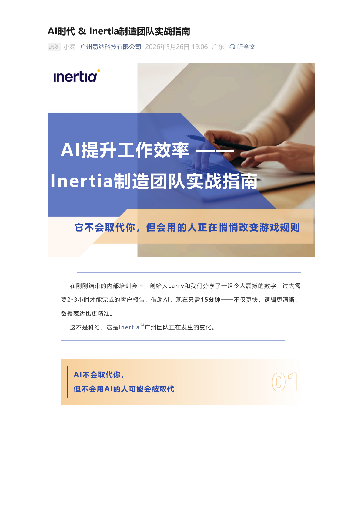
Part 1 AI赋能质量控制：从"人眼判断"到"数据洞察"
在医疗器械制造中，质量控制的精度要求极高。传统的目视检验依赖人工经验，难以做到100%一致。我们的团队引入了基于机器视觉的AI检测系统，对关键零部件的表面缺陷、尺寸公差进行实时识别与判定。
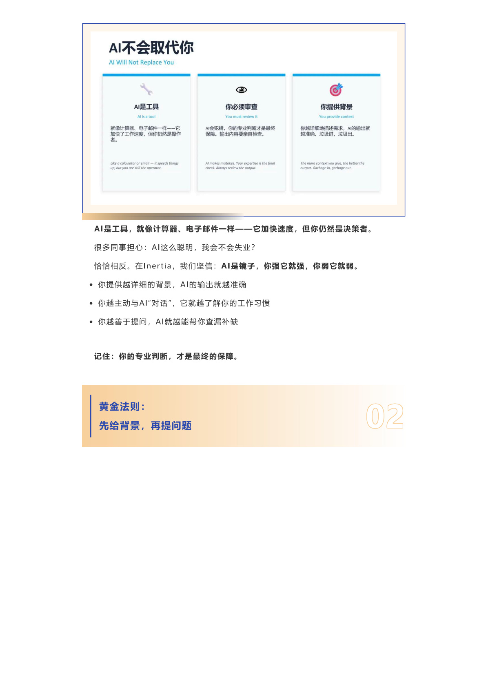
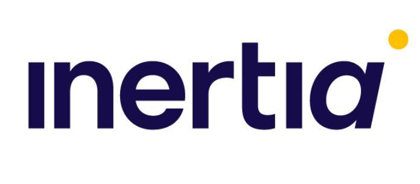
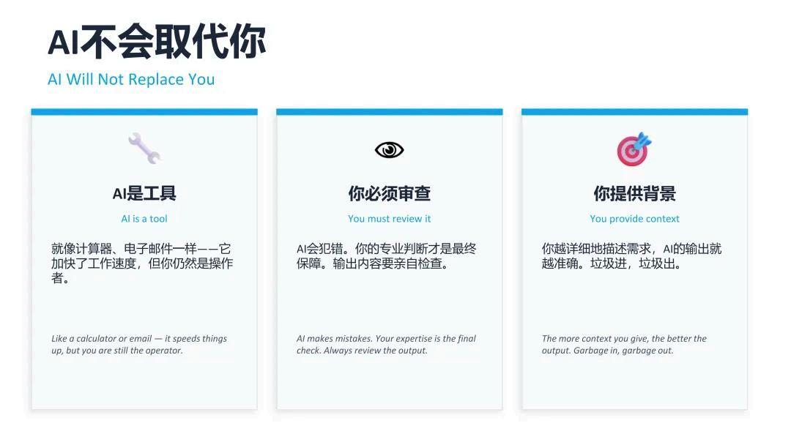
AI视觉检测不仅将缺陷检出率提升了30%以上，更重要的是实现了检测标准的高度一致性——无论白班夜班、无论哪位操作员，同一套标准，同一个结果。同时，每一笔检测数据都被实时记录与分析，形成持续优化的闭环。
从检测到预防。更深远的价值在于：积累的检测数据让我们能够识别缺陷发生的规律与趋势，将质量控制的节点从事后检验前移到过程预警，真正实现"防患于未然"。
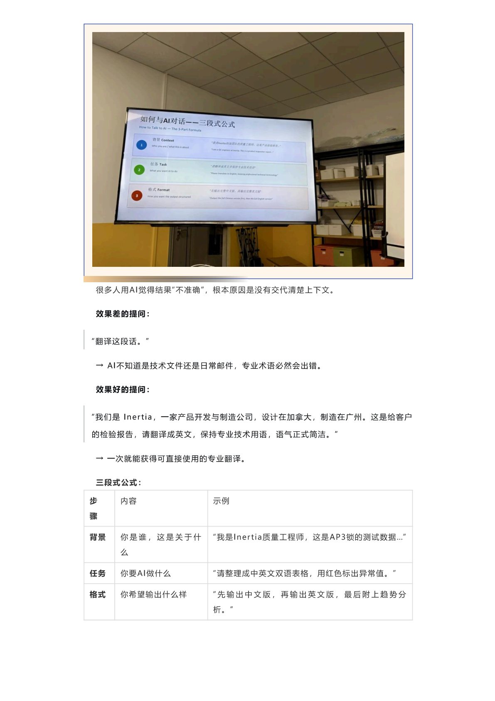
Part 2 生产流程优化：让排产更智能、执行更高效
多品种、小批量是医疗器械制造的典型特征。如何在有限的产能资源下实现最优排产，是制造团队每天都要面对的挑战。我们引入了AI辅助排程系统，将订单优先级、设备状态、物料齐套率、人员排班等多维变量纳入计算模型。
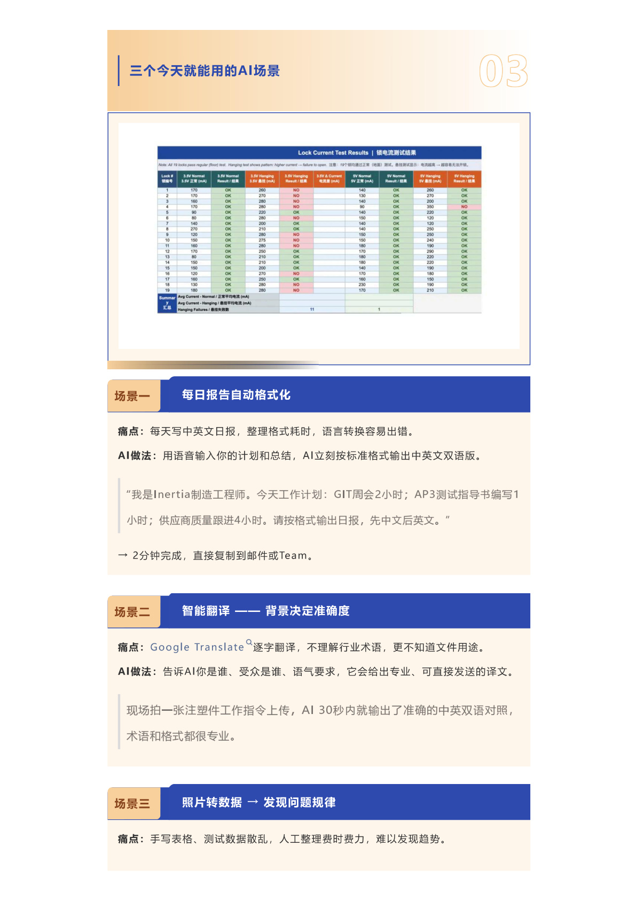
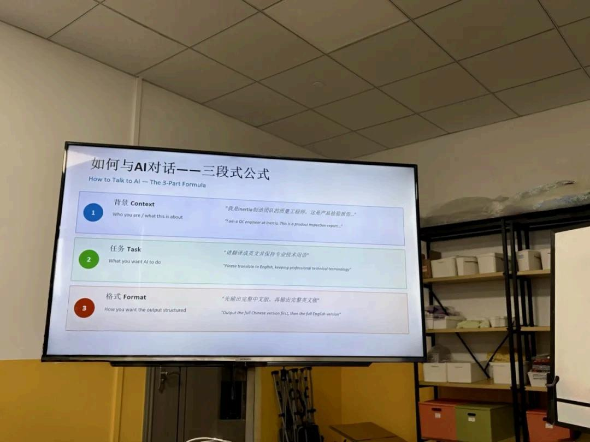
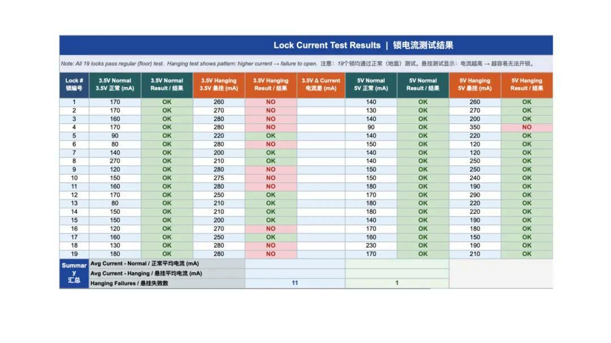
系统上线后，订单准时交付率提升了18%，设备利用率提高了22%，而换线等待时间缩短了近30%。更重要的是，排产工程师从繁琐的手工计算中解放出来，将精力投入到更需要专业判断的异常处理和持续改进中。
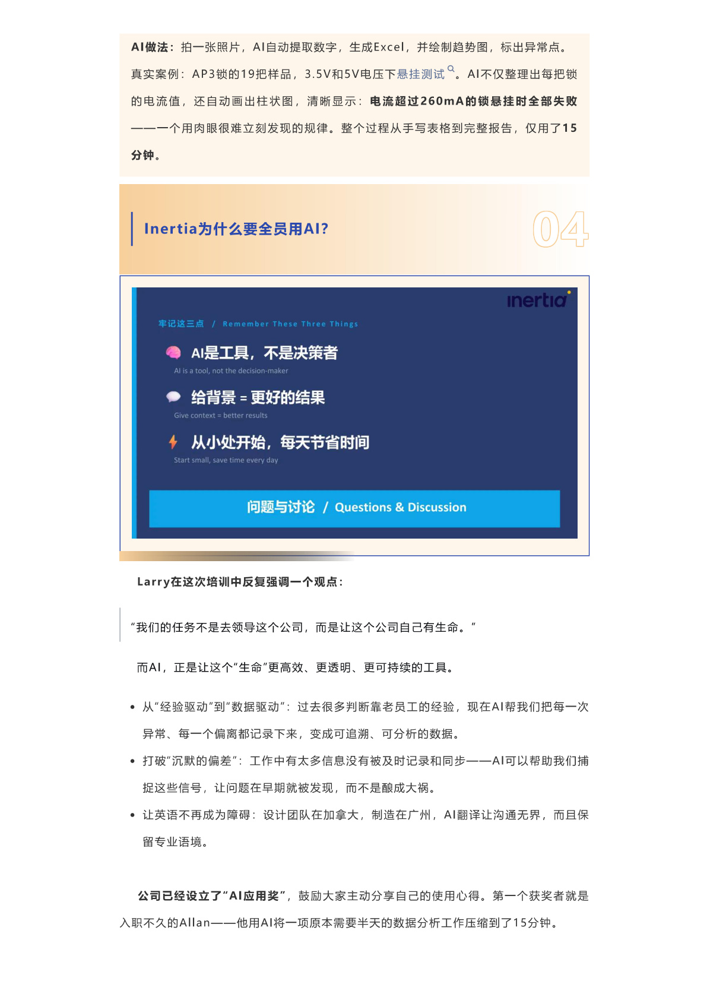
Part 3 供应链智能化：全局可视，动态响应
全球供应链的不确定性已经成为常态。对于医疗器械制造而言，原材料和零组件的供应稳定性直接关系到产品交付和患者健康。我们构建了基于AI的供应链风险预警平台，实时监测关键物料的供应状态、物流节点和价格波动。
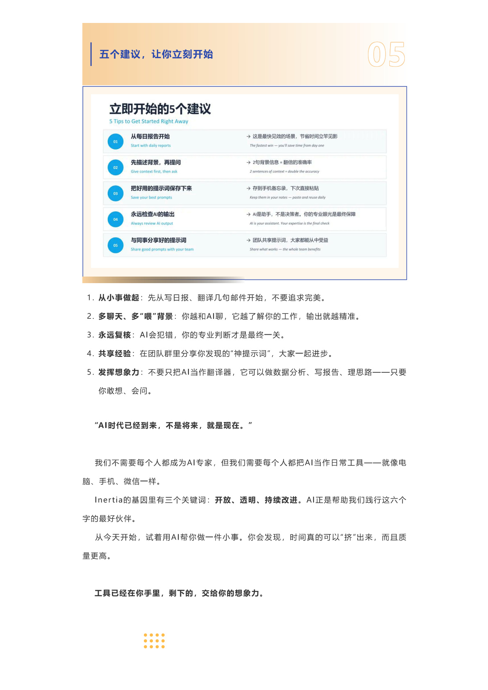
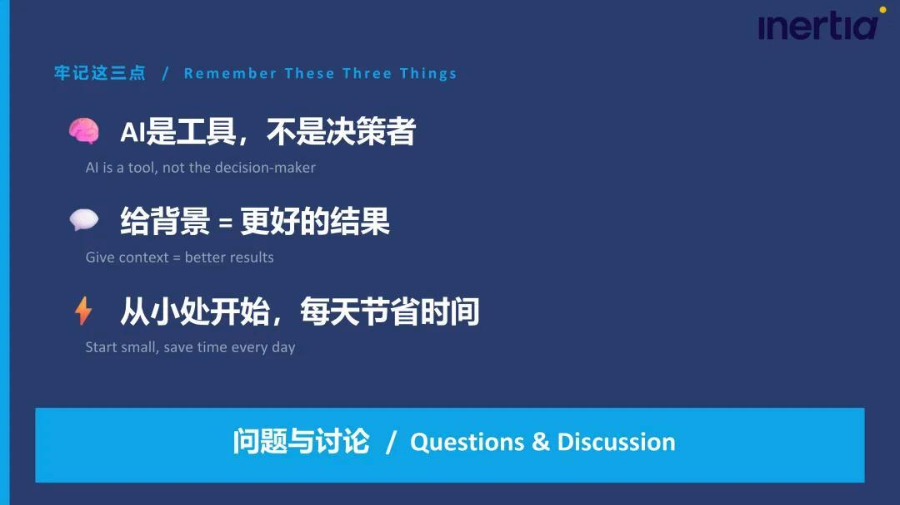
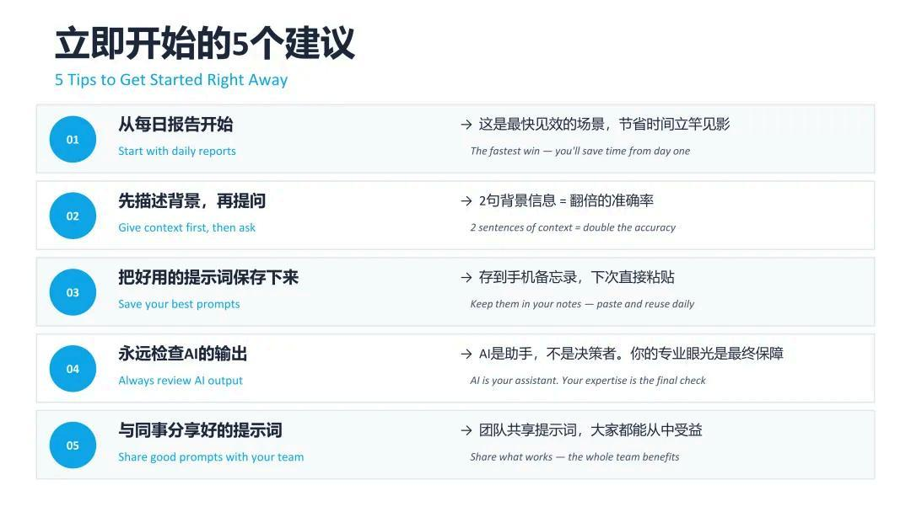
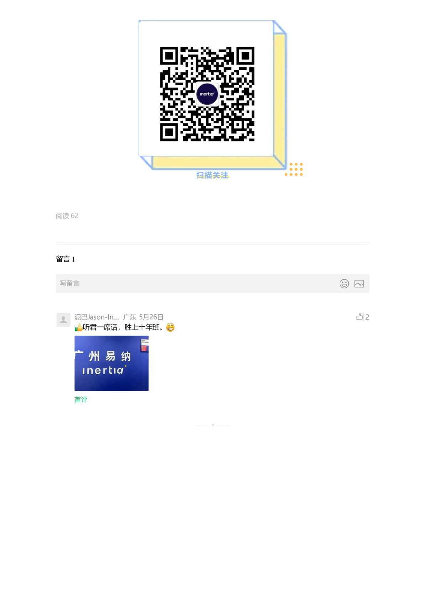
AI不是来替代人的，而是来放大人能力的。它让每一位制造工程师都有了一双"数字眼睛"和一个"数据大脑"，让他们看得更全、判断更准、决策更快。
Part 4 从工具到文化：AI落地的关键在人
再好的工具，如果没有人的理解、认同和使用，也只是摆设。在 Inertia，我们推行AI落地的核心理念是"让人驾驭工具，而非工具驱使人"。每一位团队成员都经过了系统的培训，理解AI工具的能力边界，知道如何与它协作。

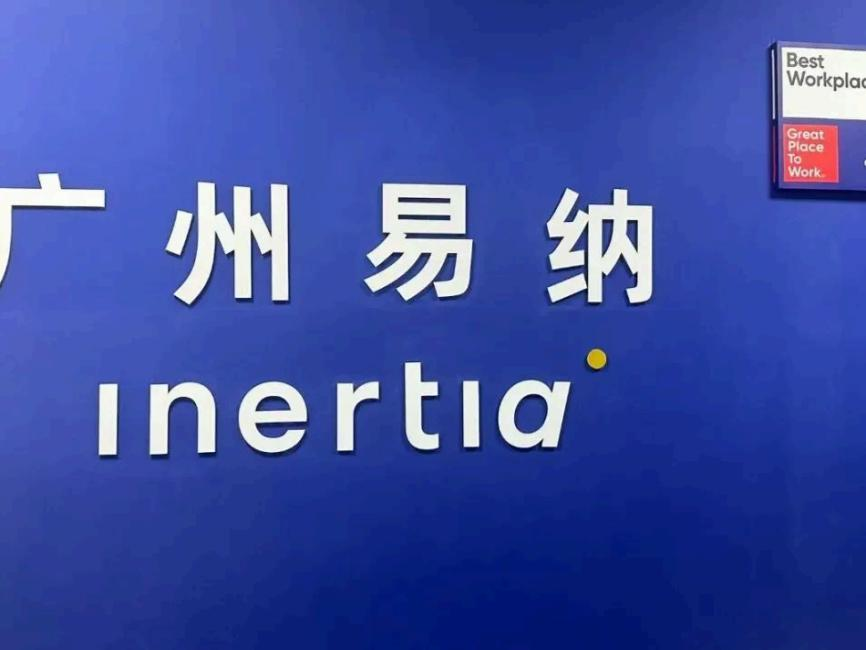
从"能用"到"用好"。我们建立了AI应用案例库，将团队在不同场景下的成功实践沉淀为标准操作指南，让经验可复制、可传承。每季度，我们还会组织跨城AI应用分享会，多伦多和广州的团队在线交流各自的使用心得与创新尝试。
AI时代的制造，竞争的不再是单纯的设备和规模，而是数据运用的能力和人机协作的深度。Inertia 制造团队正在这条路上扎实前行。
实战心得：AI工具引入的三个关键原则——先找到真实的业务痛点，再匹配合适的AI工具；让一线人员深度参与选型和验证；建立持续反馈机制，让工具和人一起成长。
AI不是未来，AI是现在。在 Inertia，每一位制造工程师都在与AI并肩工作，用数据驱动品质，用智能提升效率。 这份实战指南只是起点。AI赋能的制造之路，我们在走，也欢迎更多同行者加入探讨。